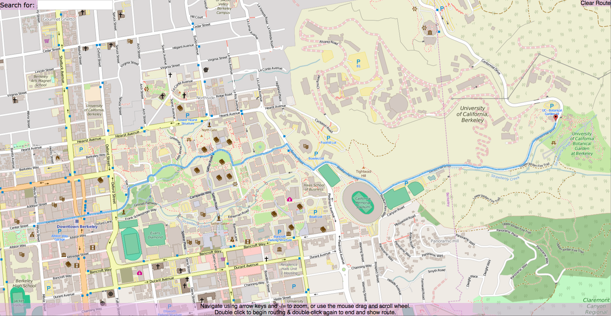
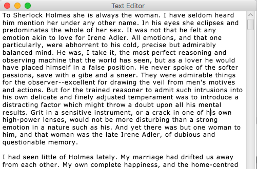

Graudate School Application Supplemental Documents
Click below for a .zip file with the code for the Berkeley Maps project and the Text Editor project, as well as the presentation I gave at the AVS Symposium conference in 2013.
DownloadBerkeley Maps
I wrote the Java backend for a Google Maps-like application that renders a dynamic map of UC Berkeley area using data from OpenStreetMaps. The application supports finding and drawing the shortest route between two user-selected points, just like Google Maps. The map is implemented using a quadtree for map rendering/zooming and A* search algorithm for path-finding. Code available upon request as a small amount of the code was not written by me and the project might be reused for the class I took.
{kind=link}
Text Editor
I designed and implemented a text editor from scratch in Java using the JavaFX library. The application supports position cursor, word-wrap, open/save, arrow key and mouse navigation, and window resizing. Code available here.
{kind=link}